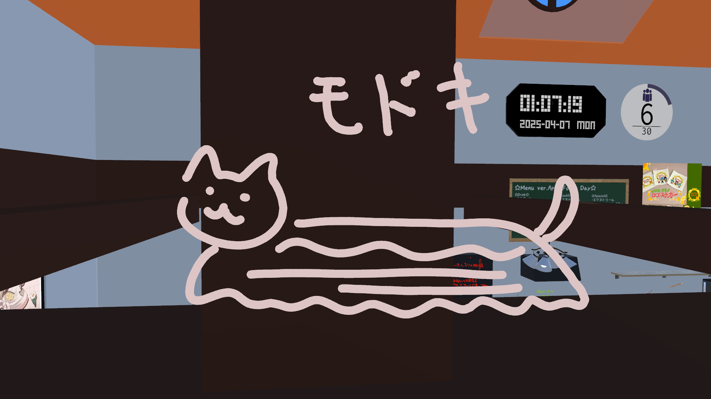

イエネコナメクジ
| イエネコナメクジ |
| Felis silvestris catus limax |

|
| 保全状況評価 |
| 愛玩動物 |
| Domesticated |
| 地質時代 |
| 約9,500年前* - 現世 |
| 新生代第四期完新世 |
| 分類 |
| ドメイン: | Eukaryota |
| 界: | 動物界 Animalia |
| 門: | 脊索動物門 Chordata |
| 亜門: | 脊椎動物亜門 Vertebrata |
| 綱: | 哺乳綱 Mammalia |
| 目: | 食肉目 Carnivora |
| 亜目: | ネコ亜目 Feliformia |
| 科: | ネコ科 Felidae |
| 属: | ネコナメクジ属 Felislimax |
| 種: | Felis silvestrislimax |
| 亜種: | F. s. catus limax |
概要
ネコナメクジ（猫蛞蝓）は、狭義には食肉目ネコ科ネコ属に分類される形状がナメクジに酷似した動物の通称である。
現在まで、ニホンオオネコナメクジとユーラシアオオネコナメクジの二種のみが確認されている。
ネコ科は洗練された体躯を活かした俊敏な動きが特徴だが、ネコナメクジは指が進化したカギムシ状の肢体による、極めてゆっくりとした動きが特徴となっている。
本種の最大の特徴はなんといっても、電脳空間に適応した進化を有史以来初めて実施/観測された種という事である。
種全体として順次電気空間への侵襲が認められており、保全のために国連の下位組織ICA（International Cat Alliance）が、ネットワーク空間上の本種の個体数などの管理活動を行っている。
生態
ネコ科には珍しく、草食性が強い。死肉を食する事があるが、稀である。
ミネラル確保の為に貝殻や岩壁を捕食することがある。
その際、放射性のある物質を好んで捕食するため、常時微量の放射線を放っている。
非常に柔軟な体で、頭部がわずかでも通過可能な隙間があれば、ほぼ無抵抗で身体全体を通過させることが可能であり、この能力によって都市部やインフラ構造物への不可解な侵入事例が多数報告されている。
水場を好み、川辺や海辺で徘徊している姿をよく見かけるが、特にテトラポッドの間に挟まって波を感じている姿が良く目撃される。
水との接触により体表の放射性濃度が一時的に安定する可能性が指摘されており、これは彼らが水場を好む理由のひとつであると考えられている。
水中に潜ることもしばしば観測され、体から発される放射線によりチェレンコフ放射が発生し淡く光る。
非常に長寿であり、100年近く生きる個体も存在する。
年齢を重ねるごとに体が大きくなり、最大で1.5m程度に達することもある。
この放射線放出の特徴が偶然、光回線を媒介した電子ネットワークへの肉体的アクセスを可能としており、2023年ごろから東アジアを中心として、VRChat等の疑似的3D空間における発見例が急増している。
電脳空間での発見例

カニを捕食するネコナメクジモドキ
3D空間上に、主に平面的に描画されたような様相で発生する。
発露した際は概ね横向きであり、正面からの視点はこれまで発見例がない。
これはエジプトの壁画に共通する特徴であり、神として信仰されていたことを本種が記憶している故、電子媒体においても横向きに描画されるという説がある。[要出展]
電脳空間上においてのみ、摂食形態が全く異なり、カニ、ケーキ等の捕食が認められる。
この捕食行為は現実に影響を及ぼしていると考えられており、ハーバー・ボッシュ法に代わる新たな食糧問題へのアプローチとして学会を中心に注目を集めている。
歴史
日本における歴史については、1589年、織田信長の家臣が飼っていた旨の記述がある。名はモケケ。
一説には、明智光秀の謀反はこのネコナメクジのモケケを巡る権力闘争の末に発生したものと言われている。
江戸時代後期、ネコナメクジの飼育が京都を中心に流行した。
流行のピークには、体重と同じ重さの金と交換されていた。
同時期に原因不明の疫病が京都で流行したが、これはネコナメクジの発する放射線の影響によるものと考えられている。
中国における記録
中国における歴史については、殷王朝の甲骨文に「猫蛞蝓」と称されているのが初出であると考えられている。
当時、雨乞いや安産祈願の儀式において「滑る神獣」として祭壇に描かれていた記録が見つかっている。
また、西周時代の青銅器には「螺行獣（らこうじゅう）」という文字が刻まれ、その形状が猫蛞蝓と一致するとの研究もある。
さらに、司馬遷が著した『史記』「滑生列伝」には、猫蛞蝓との接触によって精神的安寧を得た人物についての記述があり、
特に有名なのが「転寝猫蛞蝓撫寝事（てんしんびょうかつゆ ぶしんじ）」という故事である。
転寝猫蛞蝓撫寝事（てんしんびょうかつゆ ぶしんじ）
この故事は、前漢の文士・陳恕が戦乱の疲弊から心を病み、眠れぬ日々を送っていた際、
庭先に現れた一匹の猫蛞蝓を撫でているうちに自然と心が静まり、そのまま深い眠りに落ちたという逸話に由来する。
陳恕はその体験を「心の軸が滑り出し、我が魂、柔き背の波に乗りて夢界を渡る」と詩に詠み、
以後、猫蛞蝓を撫でることは「転寝撫行（てんしんぶこう）」として貴族階級の間で流行したと伝わる。
この故事により、猫蛞蝓は中国において「夢境導師（むきょうどうし）」、すなわち夢へ誘う神獣としての信仰を得、
宋代の道教文献『滑従集』では「一撫一夢、再撫即眠（いちぶいちむ、さいぶそくみん）」という記述が残されている。
また、科挙前夜には猫蛞蝓を模した置物を撫でて眠る風習が一部の地域に根付いていたともされている。
信仰
最古のネコナメクジの宗教文書への登場は、古代メソポタミア文明にまで遡れる。
シュメールの碑文に「地の上に伏せる猫」として
𒀯𒆷𒄯𒊬（urilima sig）として記されており、災いを防ぐ滑る祈り猫の神とされている。
古代エジプトの女神バステト（Bastet）の原型となった神聖動物は、現在ではネコとされることが一般的であるが、
一部の神話学者や動物宗教史研究者の間では、初期のバステト信仰において祀られていたのはイエネコナメクジであったとする説がある。
紀元前3000年頃のファラオ朝時代初期に見られる象形文字には、猫とナメクジが融合したような形状の神獣が描かれており、
「セケト・ウシャ（Sekhet-Usah）＝滑りし者の御前」という異名で呼ばれていた記録も残っている。
これらの文献では、猫蛞蝓は冥界と現世を往来する存在であり、死者の魂を導く守護者として信仰されていた。
しかし、中王国時代以降、ナメクジ的要素を持つ神獣信仰は次第に抑圧され、より身近で可愛らしい姿を持つイエネコがその地位を奪ったとされる。
この変遷は「人類に害をなすネコナメクジの地位をイエネコが簒奪した」という神話的物語に象徴される。
この神話では、ネコナメクジはあまりに強大な癒しの力を有し、人類の精神を支配する危険性があったため、
ラー神の命によりイエネコがそれを追放し、自らが神の座を継承したと伝えられている。
これにより、現在残るバステト像の多くはイエネコの姿となっているが、その影には土着の信仰体系が王権宗教により改変された歴史が垣間見えるという説もある。
また、一部の地下神殿には、今なお滑走する神獣が刻まれた秘匿壁画が残されているとの噂も存在する。
撫で
撫でられると非常に喜びを覚えることが知られており、肉体への脳波計測によって裏付けされた事実であることが分かっている。
具体的には、触覚刺激を受けた際、イエネコナメクジの脳幹部において快感シナプス活性反応によるドーパミン・オキシトシン放出が観測されており、これが本種の異常なまでの撫で志向性を示していると考えられている。
実体として接近・接触した場合には人体に対して中～高レベルの放射性害を与えるため、物理空間においては撫でる行為自体が禁止・規制されている。
進化生物学的に通常のネコ科動物が人間との共生関係の中で愛玩動物として撫でられてきたのに対し、ネコナメクジはその放射線的性質から忌避される歴史を歩んできた。
そのため、種全体が持つ「未撫接のトラウマ」が遺伝子的レベルで蓄積されており、撫でられるという行為に対して異常なまでの快感フィードバックを示すとされる。
一方で、電脳空間（仮想現実内）においてはそのようなリスクは存在せず、むしろ精神衛生・エンタメ・信仰行為の一環として「遭遇したら撫でるべきである」という倫理的共通認識が2023年以降、東アジア文化圏を中心に定着しつつある。
特にVRChatなどの高密度仮想空間においては、ネコナメクジのアバターが出現した場合にプレイヤーが自然と撫でるジェスチャーを行う様子がしばしば観察されている。
これは種全体が発する「撫でてオーラ（Nade Field）」の影響によるものとの分析も存在する。
一部の研究者はこれを「逆共感現象（Inverted Empathy Effect）」と呼び、人間側の撫でたい欲求とナメクジ側の撫でられたい欲求が、電脳空間内で完全に共振する特異現象と位置付けている。
ネコナメクジモドキ

某イベント開場に出没するネコナメクジモドキ

あんぱんの捕食を試みるネコナメクジモドキ
通常のイエネコナメクジは背中に2本のラインが入っているが、、ネコナメクジモドキはそのラインが1本ないし3本である。
ネコナメクジが現実世界からVRC空間に進出したのに対し、ネコナメクジモドキはVRC空間現生の猫であり、現実世界には存在しない。
ネコナメクジの影響を受けて進化した結果、形状がネコナメクジに酷似しているが、実際には全く異なる生物である。収斂進化の一種とされる。